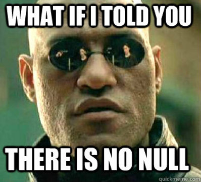
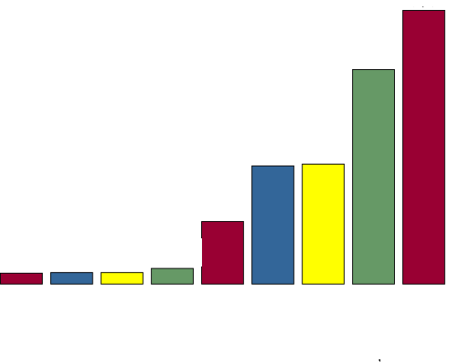

Why Haskell?

Haskell is:
- Functional
- Pure
- Lazy Evaluated
- Strongly Typed
- General Purpose
OO makes code understandable by encapsulating moving parts. FP makes code understandable by minimizing moving parts. -Michael Feathers

Your Problem
Your Problem On Objects
Your Problem Functional
Functional
- Based on lambda calculus
- High level
- Describing the logical solution, not instructing the hardware
#include
// Fibonacci numbers, imperative style
int fibonacci(int iterations)
{
int first = 0, second = 1; // seed values
for (int i = 0; i < iterations; ++i) {
int sum = first + second;
first = second;
second = sum;
}
return first;
}
int main()
{
std::cout << fibonacci(10) << "\n";
return 0;
}
fibRecurrence first second = first : fibRecurrence second (first + second)
fibonacci = fibRecurrence 0 1
main = print (fibonacci !! 10)
Pure
Purity
- No side effects
- No mutable state*
- No variables
- No loops
Purity
- Easier to reason about your code
- Easier to test
- Easier to optimize

https://github.com/anthony-coble/boggle-solver
$ ghci
*Prelude> :load boggle_solver.hs
*Main> matrix <- buildMatrix
*Main> print $ buildTree matrix
$ ghc --make boggle_solver.hs
$ time ./boggle_solver
Strongly typed
- Type safety
- Type Inference
*Main Text.Regex.Posix> "mississippi" =~ "i(s|p)" :: Bool
True
*Main Text.Regex.Posix> "mississippi" =~ "i(s|p)" :: String
"is"
*Main Text.Regex.Posix> "mississippi" =~ "i(s|p)" :: Int
3
*Main Text.Regex.Posix> "mississippi" =~ "i(s|p)" :: (String,String,String)
("m","is","sissippi")
*Main Text.Regex.Posix> "mississippi" =~ "i(s|p)" :: (Int,Int)
(1,2)
Haskell is general purpose
Yesode web framework
{-# LANGUAGE TypeFamilies, QuasiQuotes, MultiParamTypeClasses,
TemplateHaskell, OverloadedStrings #-}
import Yesod
data HelloWorld = HelloWorld
mkYesod "HelloWorld" [parseRoutes|
/ HomeR GET
|]
instance Yesod HelloWorld
getHomeR :: Handler RepHtml
getHomeR = defaultLayout [whamlet|Hello World!|]
main :: IO ()
main = warpDebug 3000 HelloWorld
Yesode features
- Type safe, down to the urls
- Scalable and performant
- Light weight syntax
- scaffolding
Yesode performance
Opengl
(play.hs demo)
Parallel
- Data.Parallel
- Data.Array.Accelerate
Community
Haskell.org
- Documentation
- Source code
- Demos
- White papers
- Blogs
Cabal
Search, manage, install, and deploy packages
#Haskell - freenode.net
- Very friendly
- Large community (always over 800 people)
- All skill levels
The future is functional